PLANORA
User Manual
Project scheduling and control: every feature explained, with a step-by-step tutorial for building, tracking and reporting a schedule.

Planora · Project ManagementDeveloped by Adeeb
Planora installs with a single Setup file and needs nothing else on the PC.
| Item | Requirement |
|---|---|
| Operating system | Windows 10 or Windows 11, 64-bit |
| Disk space | About 300 MB |
| Other software | None. Planora carries everything it needs, including its own copy of .NET. |
| Administrator rights | Not needed. Planora installs for the current Windows user. |
| Internet | Not needed, for installing or for using Planora. |
%LOCALAPPDATA%\Programs\Planora) and the three options: Create a desktop shortcut, Open .planora files with Planora, and Start Planora when Setup finishes.To install a newer version, run its Setup file: it replaces the old program and keeps your project files. To remove Planora, open Settings › Apps › Installed apps, find Planora (publisher: Adeeb) and choose Uninstall. Your project files are never deleted.
The schedule is the centre of the screen. Everything else sits around it.
| Area | What it does |
|---|---|
| Sidebar (left) | Switches between views, grouped into Schedule and Resources. The selected view is tinted with an accent mark. At the bottom: the project name and status (Not started, Active or Complete), whether your changes are saved, and when you last saved. |
| Top bar | The breadcrumb shows the folder and project name; a Baseline chip appears once a baseline is saved and an Edited chip while there are unsaved changes. On the right: Search commands (Ctrl+K), the bell with schedule warnings, Options, and the account menu (accent colour, About). |
| Command bar | The menus File, Task, Resource, Report, Project, View, Format, Help hold every command. Next to them are the everyday commands: Undo, Redo, Schedule, Update Tasks, Inspect, Add Task, Milestone, Recurring Task, Go To Task, Find, Filter and Task Properties. On the right: the Critical path switch and zoom. |
| Task table | One row per task: row number, status, indicators, scheduling mode, name and the columns of the current table. Phases (summary tasks) are bold and can be collapsed with their arrow. |
| Gantt chart | Bars on a timescale of months, weeks and days, with today marked. Hover a bar for a details card; drag it to change the schedule. |
| Status bar | Number of tasks, critical tasks, project duration, finish date, resources, the latest message, and the save state. |
| Mark | Meaning |
|---|---|
| Green tick | Complete (100%). |
| Indigo ring | In progress; the ring fills with the percentage complete. |
| Amber ring | Behind schedule at the status date (or today). |
| Dashed ring | Not started. |
In the Mode column a lightning icon means auto scheduled (Planora calculates the dates) and a pin means manually scheduled (you fix the dates).
You never need to remember where a command lives. Press Ctrl+K or click Search commands and type a few letters.
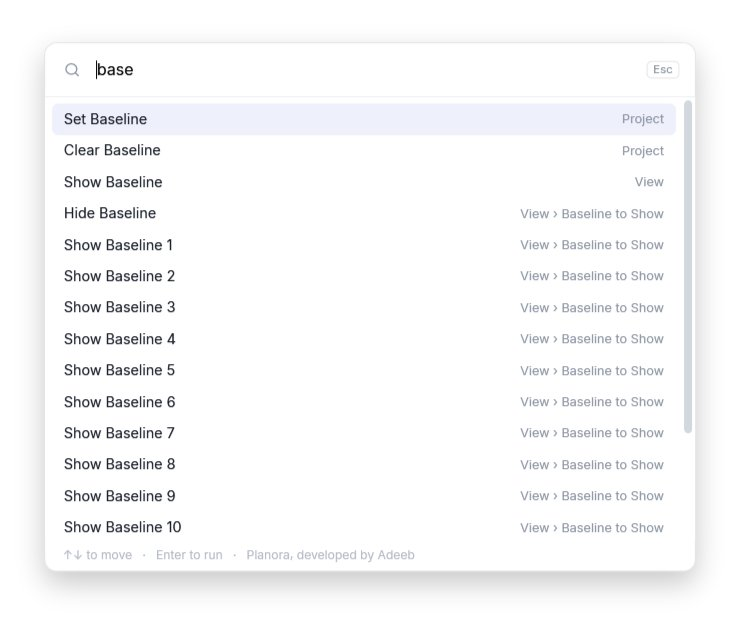
The search covers every menu command, every view, every table, filter and group, and every task in the project. Use ↑ ↓ to move and Enter to run; choosing a task selects it and scrolls the chart to it. Esc closes the search.
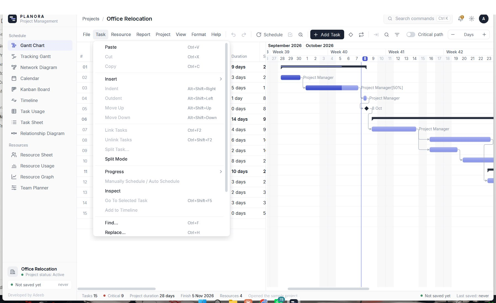
| Menu | Contains |
|---|---|
| File | Opens the File page: Info, New, Open (with recent projects), Save, Save As, Print (with preview), Export, Options and About. |
| Task | Clipboard, Insert (task, summary, milestone, recurring task), indent and outdent, move up and down, link and unlink, split, progress (0–100%, Mark on Track, Update Tasks), scheduling mode, Inspect, Go To, Add to Timeline, Find, Replace, Fill Down, Spelling, Task Information, hyperlinks and Delete. |
| Resource | Resource views, Resource Information, Delete Resource, Budgets, resource pool commands and Level Resources. |
| Report | Dashboards, task and resource reports, the report designer, Compare Projects, PDF, image, Print and Page Setup. |
| Project | Project Information, Custom Fields, Change Working Time, Calculate Project, baselines, Update Project, links to other projects, subprojects, Import and Export. |
| View | Table, Filter, Group, Sort, Define (tables, filters, groups, fields, Organizer), Expand/Collapse All, zoom, critical path, baselines, progress lines, usage details, Timeline and Details panes, saved views and Macros. |
| Format | Text Styles, Bar Styles, Gridlines, Timescale, Task Path, Columns and Custom Fields. |
| Help | Search Commands, Open Sample Project and About Planora. |
| Keys | Command |
|---|---|
| Ctrl+K | Search commands and tasks |
| Ctrl+N | New project |
| Ctrl+O | Open |
| Ctrl+S | Save |
| F12 | Save As |
| Ctrl+P | |
| Ctrl+Z | Undo |
| Ctrl+Y | Redo |
| Insert | Insert task |
| Delete | Delete selected tasks |
| Ctrl+C / X / V | Copy, cut, paste tasks |
| Ctrl+D | Fill down |
| Keys | Command |
|---|---|
| Alt+Shift+→ / ← | Indent / outdent |
| Alt+Shift+↑ / ↓ | Move task up / down |
| Ctrl+F2 | Link selected tasks |
| Ctrl+Shift+F2 | Unlink tasks |
| Shift+F2 | Task Information |
| Ctrl+Shift+F5 | Scroll to the selected task |
| F9 | Recalculate the schedule |
| Ctrl+F / Ctrl+H | Find / Replace |
| F7 | Spelling |
| Alt+F8 | Macros |
| Ctrl++ / Ctrl+− | Zoom in / out |
| Ctrl+mouse wheel | Zoom around the mouse |
| Shift+mouse wheel | Scroll the chart sideways |
| Action | Result |
|---|---|
| Drag the middle of a bar sideways | Moves the task. An auto-scheduled task gets a Start No Earlier Than constraint on the new date; a manual task simply moves. |
| Drag the right edge of a bar | Changes the duration. |
| Drag the left edge of a bar | Sets the percentage complete. |
| Drag a bar up or down onto another task | Links the two tasks (finish-to-start). |
| Double-click a bar | Opens Task Information. |
| Hover a bar | Shows duration, start, finish, progress, deadline and slack. |
| Right-click a column header | AutoFilter: show only rows with chosen values in that column. |
Every change, whether typed, dragged or made in a dialog, can be undone with Ctrl+Z.
This tutorial builds a small construction schedule from scratch, then tracks and reports it. Allow about 20 minutes.
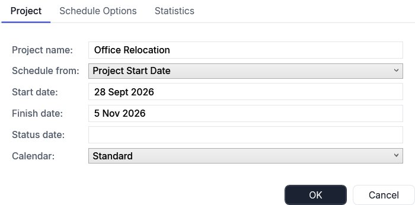
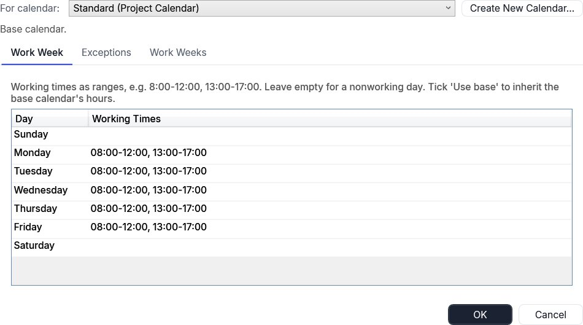
5d for five working days, 2w for two weeks, 4h for four hours. Add ? for an estimate (3d?).Select the row where the milestone belongs and click Milestone in the command bar. A milestone has zero duration and shows as a diamond. Any task can also be shown as a milestone from Task Information.
3 (finish-to-start after row 3), 3SS+2d (start two days after row 3 starts), 5FF, 7FS-1d (one day of lead), 4FS+50%.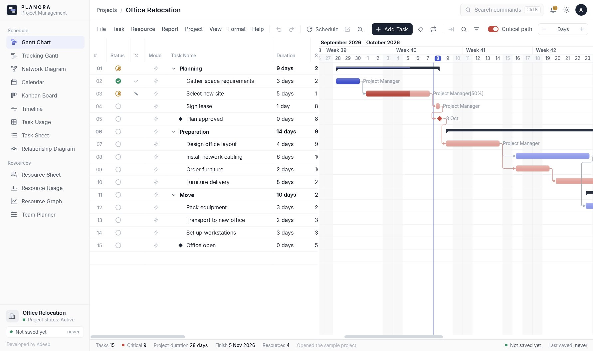
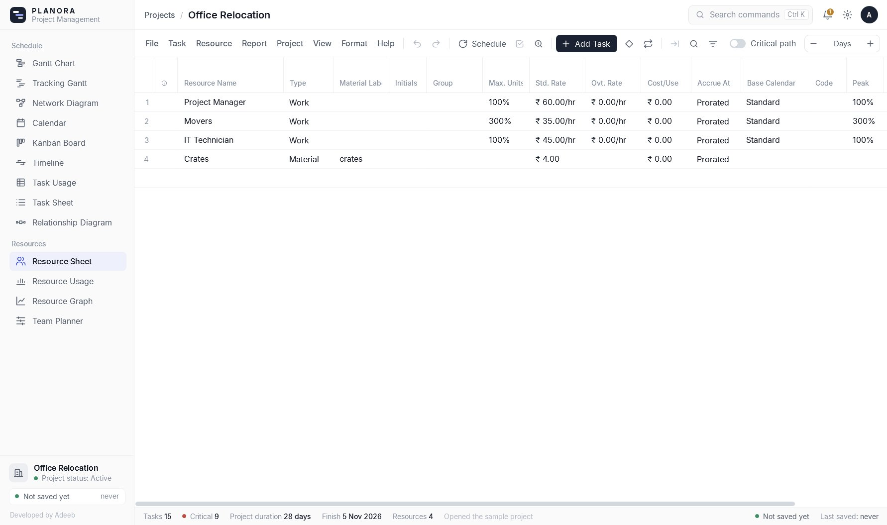
Movers[200%], Crates[40].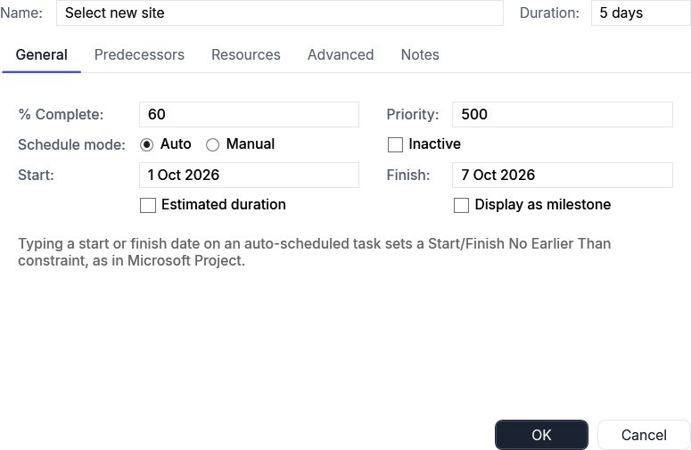
When the plan is approved, open Project › Set Baseline, choose Baseline and Entire project, and click OK. Planora stores the planned dates, durations, work and costs so you can compare progress against them later. The top bar now shows a Baseline chip.
The main working view: the task table on the left and the timeline on the right, scrolled together.
| Bar | Meaning |
|---|---|
| Indigo bar | An auto-scheduled task. The darker part inside is the work completed. |
| Red bar | A critical task (only while the Critical path switch is on). |
| Teal bar | A manually scheduled task. |
| Dashed outline | An inactive task (kept for reference; it no longer affects the schedule). |
| Thin navy bar with end points | A summary task (phase). |
| Diamond | A milestone. |
| Dotted gap between bar pieces | A split task (work interrupted and resumed). |
| Green/red down arrow | A deadline: green when met, red when missed. |
| Grey bar underneath | The baseline (Tracking Gantt, or View › Baseline). |
Text beside bars (resource names by default) and every colour and shape can be changed in Format › Bar Styles. The timescale shows month, week and day at day zoom; zoom out for weeks, months, quarters and years, or in for hours.
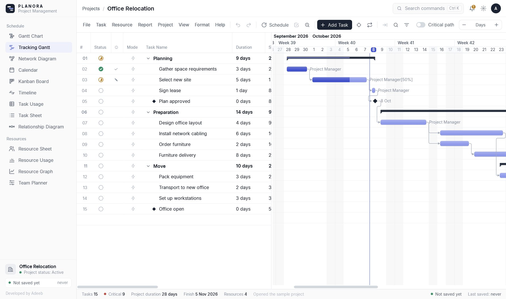
Choose which of the 11 baselines to show in View › Baseline to Show.
Each task is a box with its dates, duration, ID and resources; arrows show the links. Completed tasks are shaded green, in-progress tasks crossed, critical tasks outlined in red when the critical path is on.
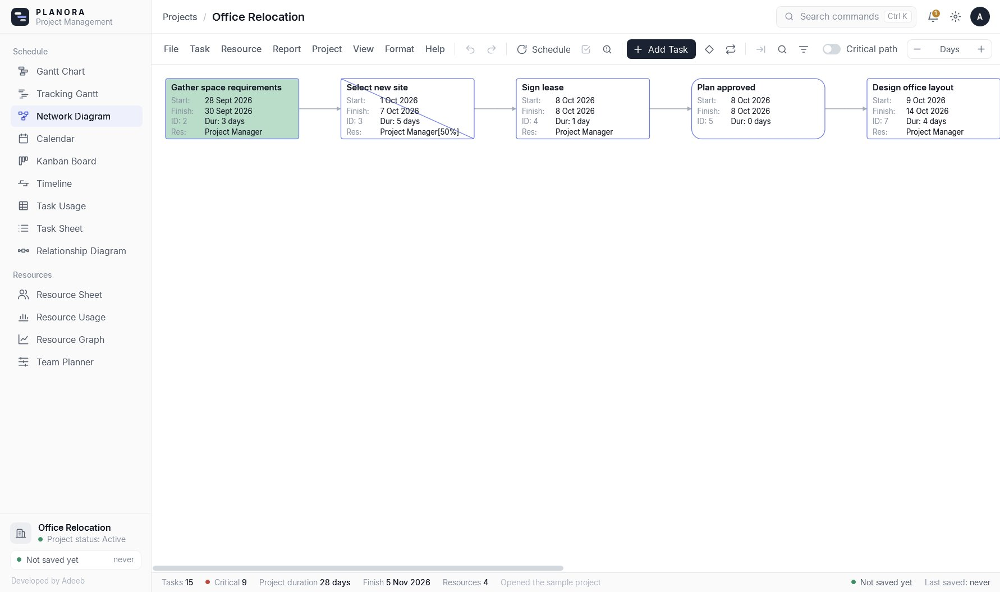
A month calendar with task bars across the days they run, for a quick “what happens this month” view.
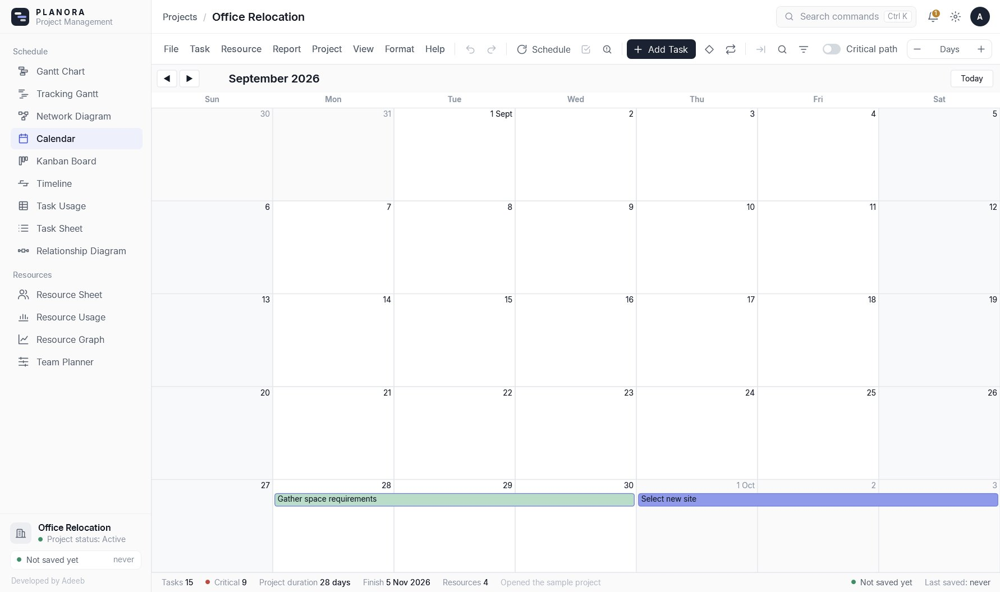
Tasks as cards in Not Started, In Progress and Complete columns, with dates, resources and a progress bar. Drag a card to another column to update its progress.
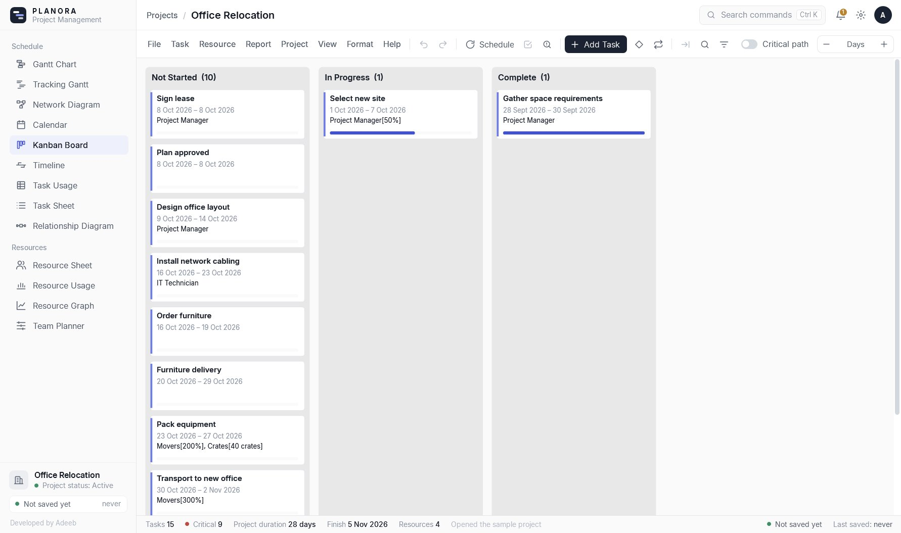
A one-page summary of key tasks and milestones for presentations. Add tasks with Task › Add to Timeline. The Timeline can also be shown above any view (View › Timeline Pane).
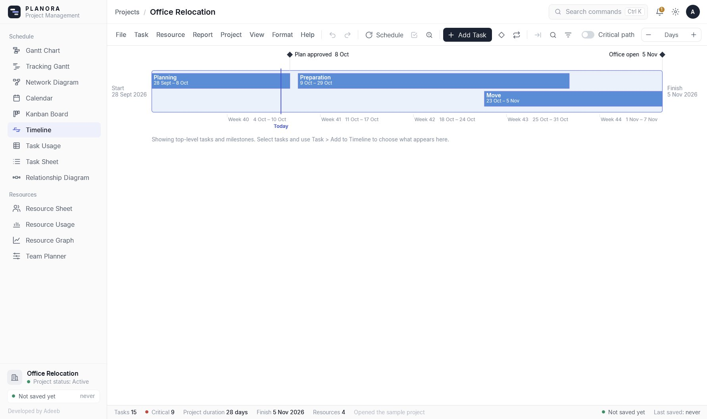
Each task with its assignments underneath, and work spread across the timescale. Choose the detail rows (work, actual work, remaining work, baseline work, cost, actual cost, baseline cost) in View › Usage Details.
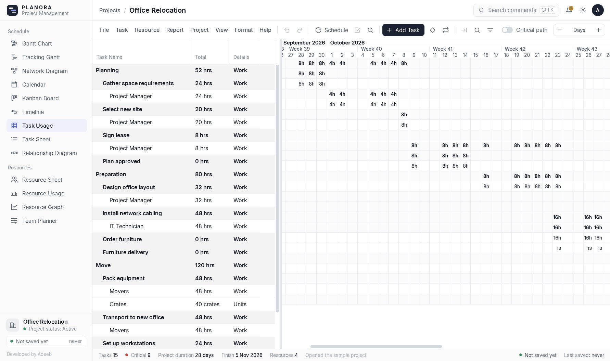
The task table on its own, full width, for data entry and long tables.
The selected task in the middle with its direct predecessors on the left and successors on the right: a quick way to check one task's links.
Each resource with the tasks assigned to it and work per period. Overallocated resources and periods are shown in red.
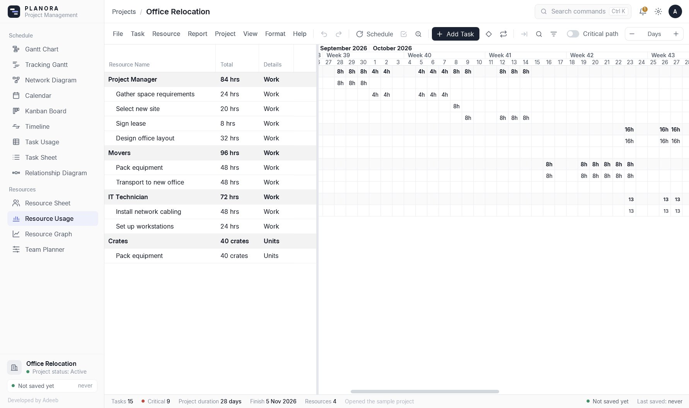
A histogram of the selected resource's allocation against its maximum units, period by period; bars above the line are overallocation.
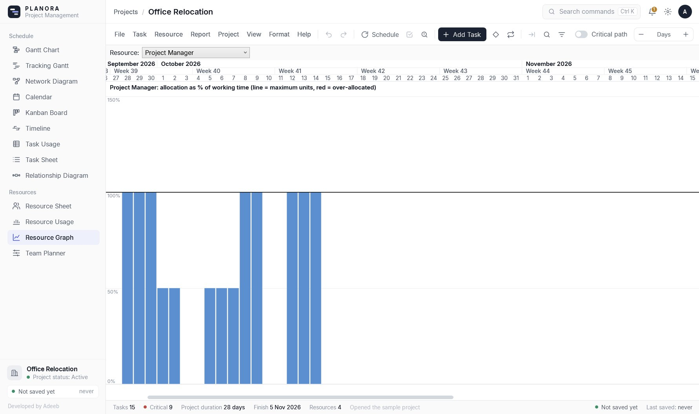
One row per resource with its tasks as blocks over time, plus a row of unassigned tasks. Drag a block to another resource's row to reassign it, or along the row to reschedule it.
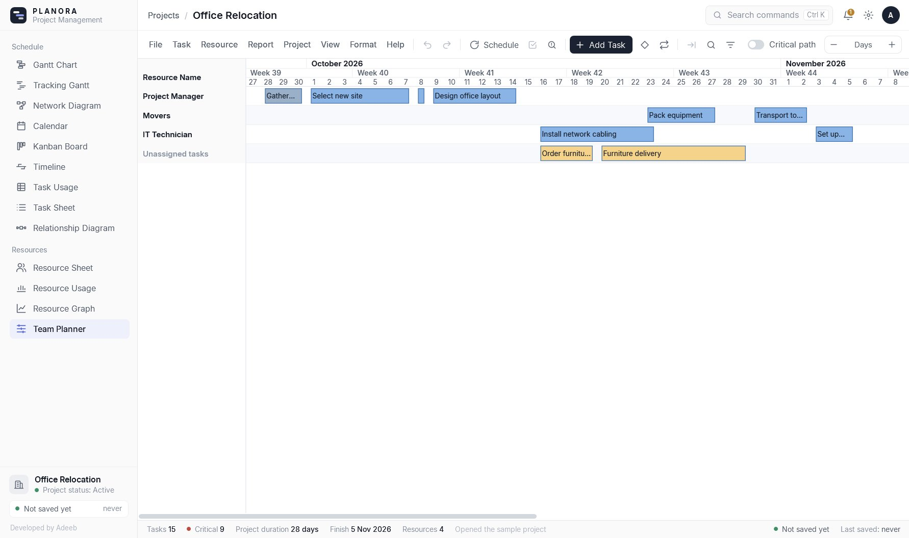
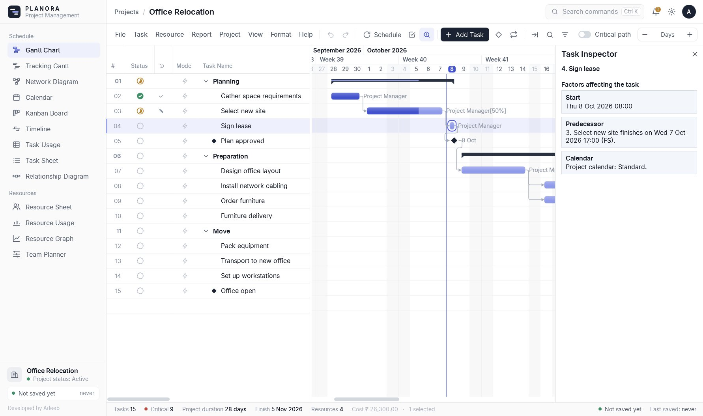
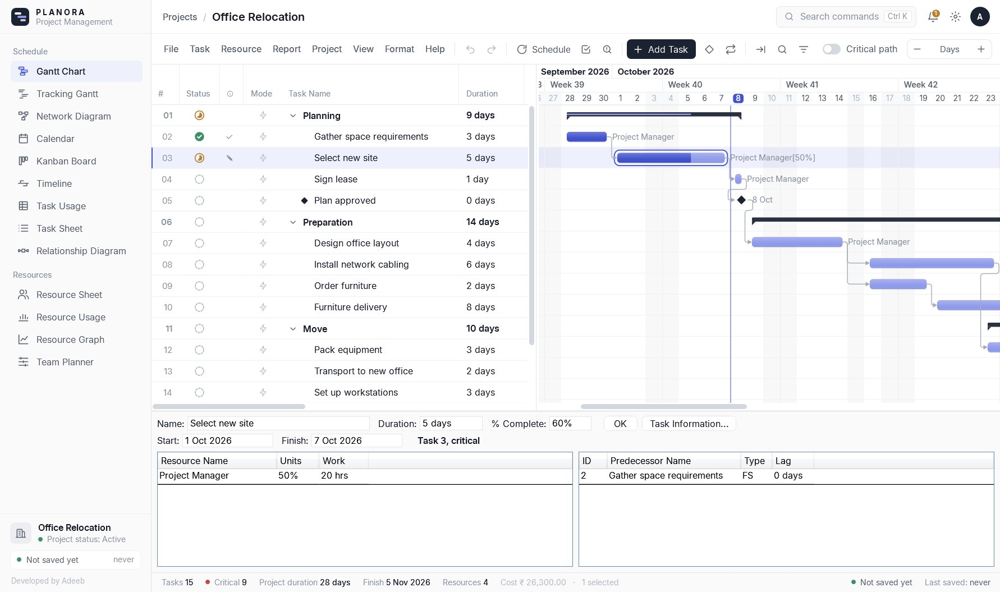
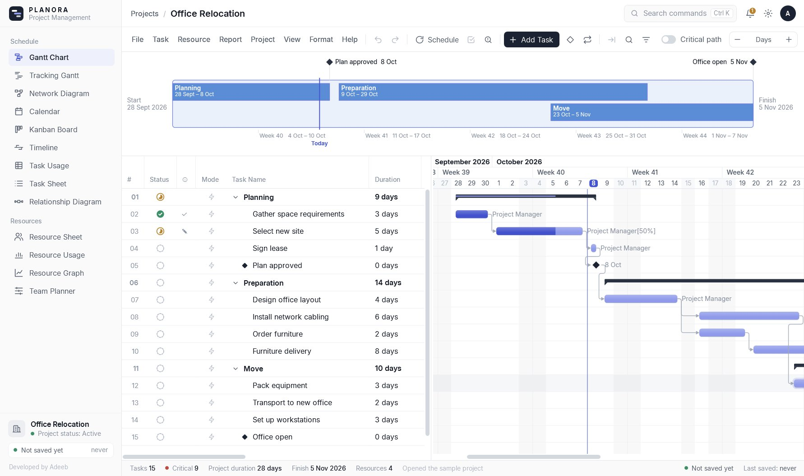
Planora schedules with the critical path method: from the project start, through the links, on the working calendars, honouring constraints, actual dates and resource availability.
| Property | Use |
|---|---|
| Name, duration | Duration in minutes, hours, days, weeks or months; elapsed durations (3ed) run through nights and weekends; ? marks an estimate. |
| Schedule mode | Auto: Planora calculates dates. Manual: you set start and finish; links are shown but do not move the task. |
| Task type | Fixed Units, Fixed Duration or Fixed Work: which of duration, units and work stays fixed when another changes. Effort driven: adding a resource shortens the task. |
| Constraint | As Soon As Possible, As Late As Possible, Must Start On, Must Finish On, Start/Finish No Earlier Than, Start/Finish No Later Than. |
| Deadline | A target date that does not move the task but warns when missed. |
| Calendar | A task calendar replaces the project calendar for that task (e.g. a 24/7 curing task). |
| Priority | 0–1000; leveling delays lower-priority tasks first. 1000 is never delayed. |
| Inactive | Keeps the task but removes it from the schedule and costs (what-if planning). |
| Display as milestone, Mark | Show any task as a diamond; flag tasks for a filter. |
| Earned value method | % Complete or Physical % Complete. |
| Notes, hyperlink | Free text and a link to a web page or file (Task › Open Hyperlink). |
| WBS code | Calculated from the outline (1, 1.1, 1.2…). |
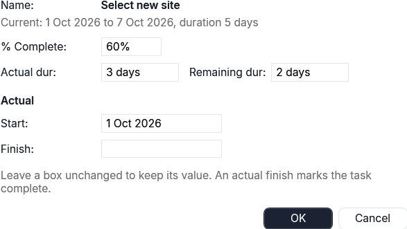
| Type | Meaning | Typed as |
|---|---|---|
| Finish-to-start (FS) | B starts after A finishes. The most common link. | 3 or 3FS |
| Start-to-start (SS) | B starts when A starts. | 3SS |
| Finish-to-finish (FF) | B finishes when A finishes. | 3FF |
| Start-to-finish (SF) | B finishes when A starts. | 3SF |
Lag delays the successor (3FS+2d); lead overlaps it (3FS-1d); lag can be a percentage of the predecessor's duration (3SS+50%) or elapsed (3FS+2ed). Several predecessors are separated by commas.
With Autolink inserted or deleted tasks (Project › Project Information) a task inserted into a chain is linked in automatically, and deleting one rejoins the chain. Links to tasks in other project files are described in chapter 28.
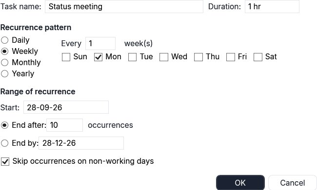
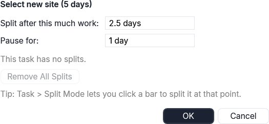
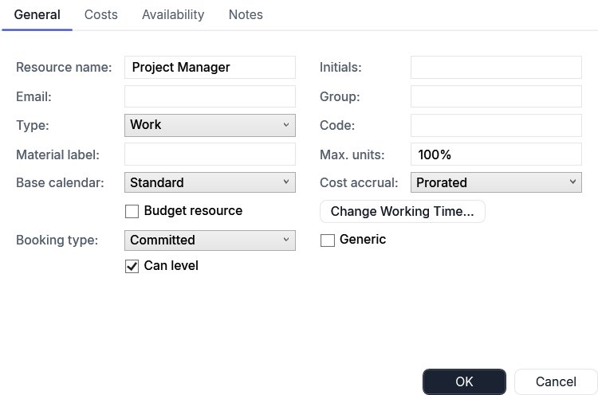
| Property | Use |
|---|---|
| Type | Work, Material (with a label such as m³) or Cost. |
| Max units, availability | The resource's capacity, which can change over time (availability table). |
| Rates | Standard and overtime rates, cost per use, and up to five cost rate tables (A–E) with dated rate changes. |
| Accrue at | Start, Prorated or End: when the cost is counted. |
| Calendar | The resource's own working time and holidays. |
| Generic, booking type, can level | Placeholder roles, proposed or committed bookings, and whether leveling may move this resource's work. |
| Group, code, initials, e-mail | Information for filters, groups and reports. |
An assignment links a resource to a task with units, work and a work contour (flat, back loaded, front loaded, double peak, early peak, late peak, bell, turtle, or contoured period by period). Double-click an assignment in a usage view for Assignment Information: units, work, delay, cost rate table and contour.
When a resource is asked to work more than its maximum units, Planora marks it as overallocated (red in resource views and a warning in the bell). Leveling resolves this by delaying or splitting lower-priority work.
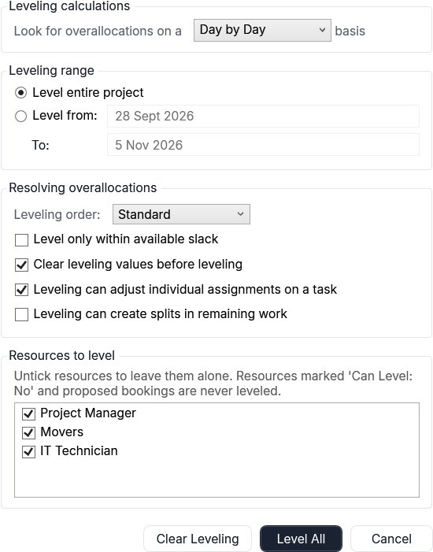
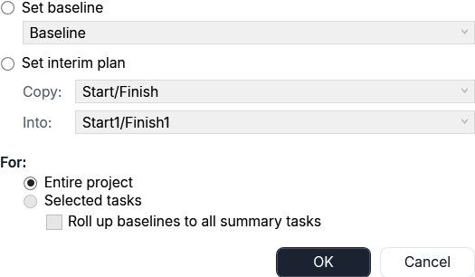
Planora keeps 11 baselines (Baseline, Baseline 1–10) and 10 interim plans (start and finish only). Save the whole project or only selected tasks; summary tasks can roll up the baselines of their tasks. Project › Clear Baseline removes one. Variance fields (start, finish, duration, work, cost) compare the current plan with the baseline.
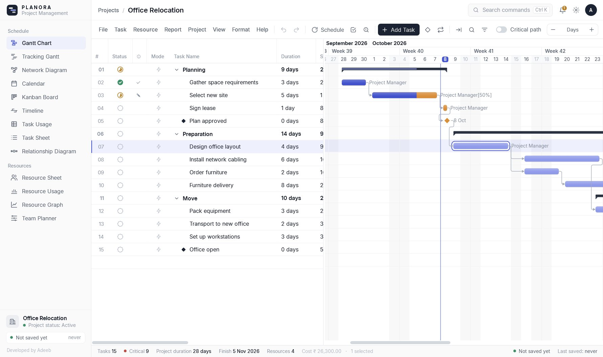
A table is the set of columns in the task table. Built in: Entry, Schedule, Cost, Tracking, Variance, Work, Baseline, Summary, Earned Value, Constraint Dates, Delay. Switch in View › Table; insert, remove and arrange columns in Format › Columns; create your own in View › Define › Tables.
Built in: All Tasks, Active, Completed, Incomplete, Critical, Late, Slipping, Milestones, Marked, Summary, Manually Scheduled, Tasks With Deadlines, Missed Deadlines, Estimated Durations and Fixed Dates. A filter can hide other tasks or highlight the matching ones. Define your own with any field and condition; a value starting with ? makes an interactive filter that asks for the value each time. Right-click a column header for a quick AutoFilter.
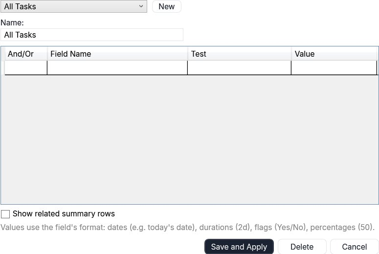
Group tasks by status, critical, milestone, duration, priority, constraint type, mode, resource or start month — or any field you choose — with roll-up bars for each group. View › Sort sorts by up to three fields, optionally keeping the outline.
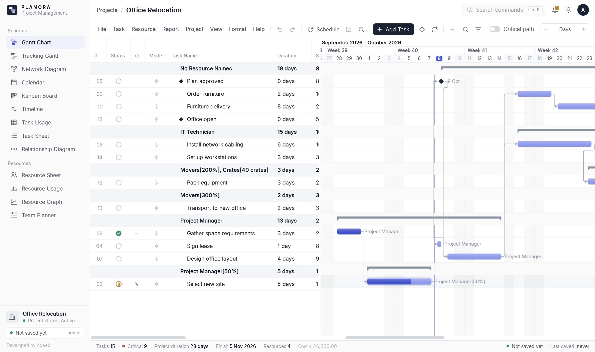
Give your own meaning to the spare fields: Text 1–30, Number 1–20, Date 1–10, Flag 1–20, Cost 1–10, Duration 1–10 and Outline Code 1–10 (Project › Custom Fields).
[Cost] - [Baseline Cost] or IIf([% Complete] = 100, "Done", "Open"). Functions include IIf, Switch, Abs, Round, Min, Max, Len, Left, Right, Mid, CStr, Val, Format, Now, Date, DateAdd, DateDiff and ProjDurConv.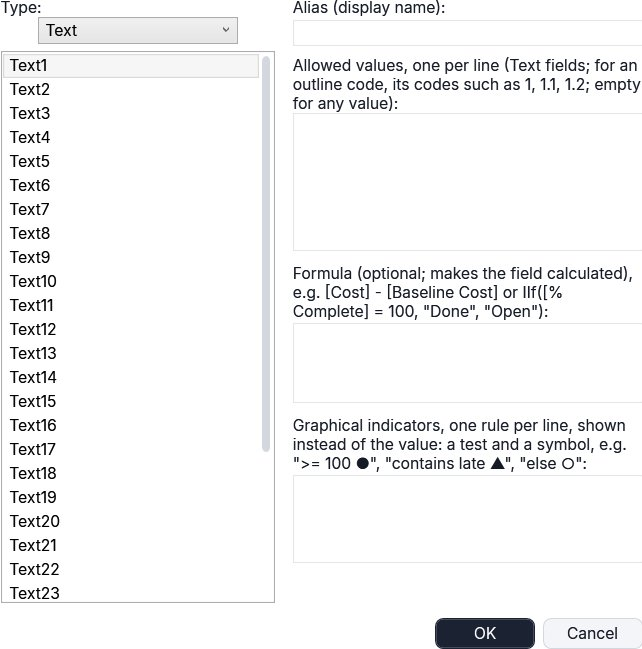
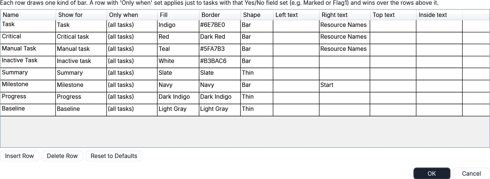
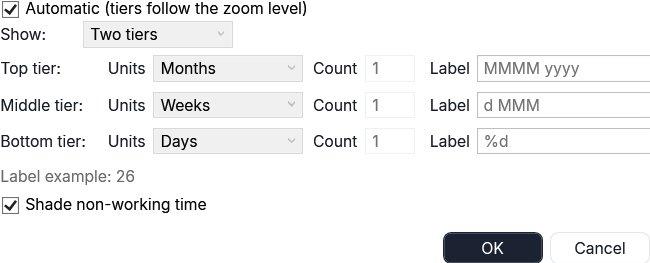
View › Save View stores the current view with its table, filter, group and sort under a name; View › Saved Views brings it back. The Organizer (View › Define › Organizer) copies calendars, tables, filters, groups, views, custom fields, reports and macros between projects, or deletes ones you no longer need.
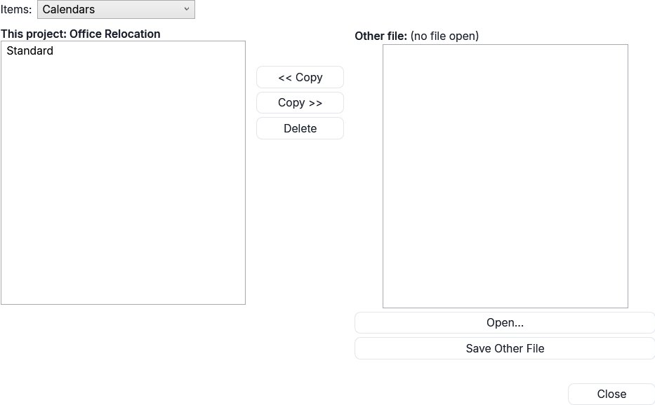
| Group | Reports |
|---|---|
| Dashboards | Project Overview, Cost Overview, Earned Value, Burndown, Cash Flow, Work Overview, Cost Overruns |
| Tasks | Critical Tasks, Task Status, Milestones, Late Tasks, Upcoming Tasks, Slipping Tasks |
| Resources | Resource Overview, Who Does What, Overallocated Resources |
Reports open in a report window from which they can be printed or saved as PDF. Custom Reports opens the report designer: build your own report from text, key project figures, task tables (any fields, filtered), task bar charts of any numeric field, and resource tables.
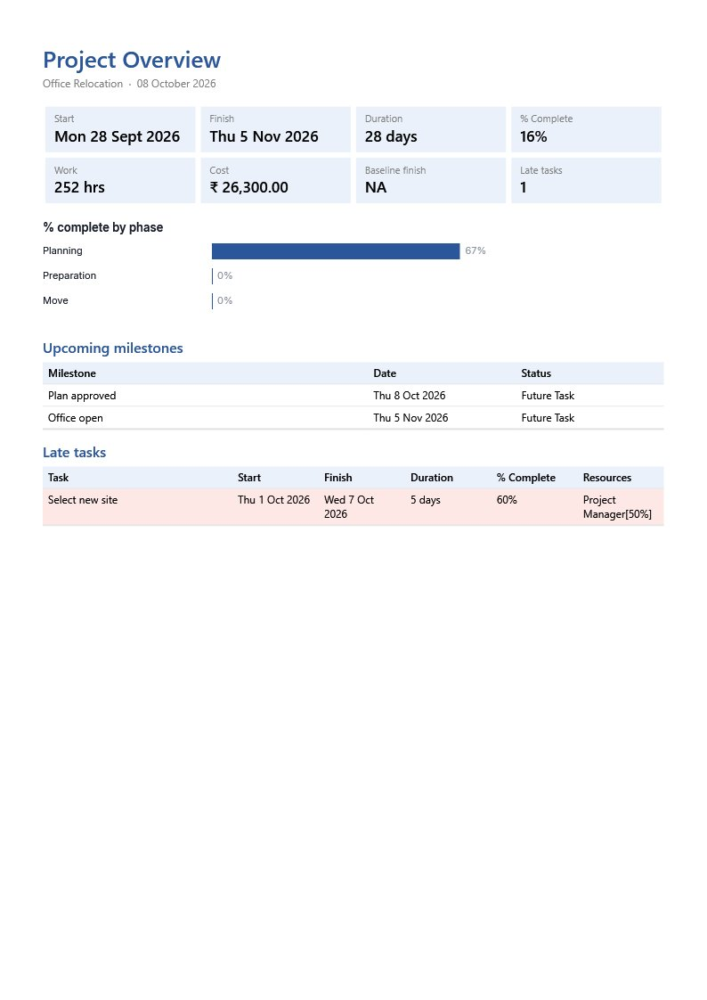
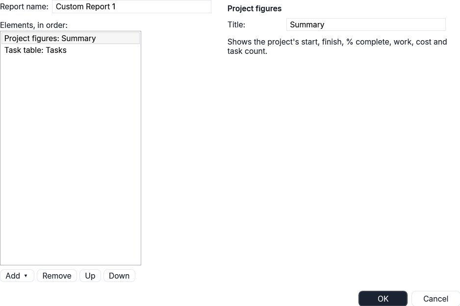
Compare Projects (Report › Compare Projects) opens an earlier version of the plan and lists tasks and resources that were added, removed or changed, field by field.
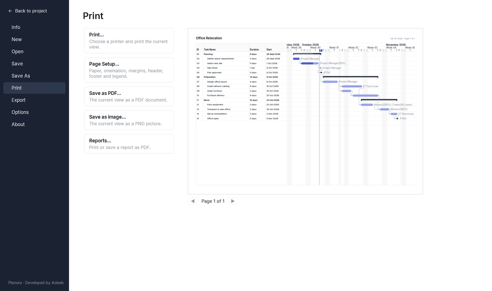
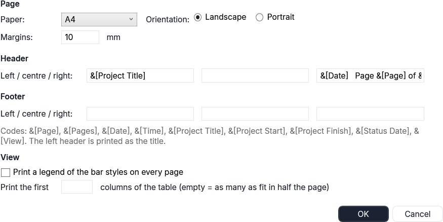
| Format | Open | Save / export | Notes |
|---|---|---|---|
| Planora project (.planora) | Yes | Yes | Planora's own format: keeps everything. |
| Microsoft Project (.mpp, .mpt) | Yes | No | Opens .mpp files saved by current and older versions of Microsoft Project. To give a plan back to Microsoft Project, export Microsoft Project XML. |
| Microsoft Project XML (.xml) | Yes | Yes | Full schedule, resources, assignments, calendars, baselines, custom fields, splits and contours. |
| Excel (.xlsx) and CSV | Yes | Yes | Import Wizard maps your columns to Planora fields. |
| Primavera P6 (.xer, P6 XML) | Yes | Yes | |
| MPX (.mpx) | Yes | Yes | |
| Asta, Phoenix, GanttProject and others | Yes | No | .pp, .ppx, .gan, .sdef, .fts, .pod, .cdpx, .schedule_grid |
| Planora template | Yes | Yes | File › Save as Template; File › New › From a template. |
When a file contains something Planora cannot bring in exactly (for example a link to a missing task), Planora opens it anyway and lists the import notes. Files opened from other formats open as new, unsaved Planora projects.
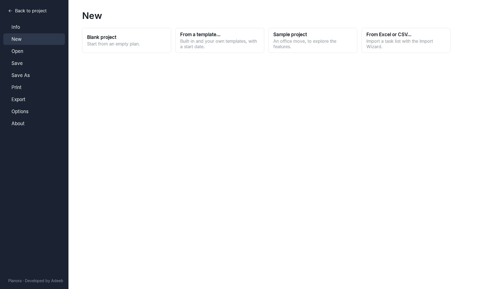
View › Macros (Alt+F8) writes and runs macros in a VBA-like language: loops, conditions, variables and functions over tasks, resources and fields — for example to set a custom field on every critical task. Macros are saved with the project and can be copied with the Organizer.
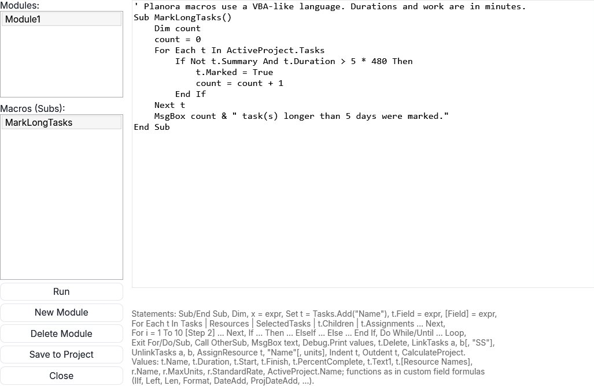
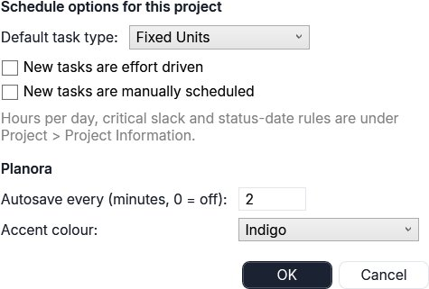
| You type | Planora reads |
|---|---|
30m, 4h | 30 minutes, 4 hours of working time |
5d, 2w, 1mo | 5 days, 2 weeks, 1 month of working time (lengths set in Project Information) |
3ed, 1ew | Elapsed: 3 calendar days, 1 calendar week |
4d? | An estimated duration |
0d | A milestone |
3, 3FS+2d, 5SS-1d, 7FF+25% | Predecessors with type and lag |
Movers[200%], Crates[40] | Resource names with units or quantities |
28 Sep 2026, 28/09/2026 13:00 | Dates in your Windows format; a date without a time means the start of that working day (or its end, for finish dates) |
| Problem | What to do |
|---|---|
| A task will not move earlier | Select it and click Inspect: a predecessor, a constraint (perhaps set by dragging) or an actual start is holding it. |
| The finish date is later than expected | Turn on Critical path; shorten or overlap the red tasks, or add resources to effort-driven tasks. |
| A resource shows red | It is overallocated. Use Resource Usage to see when, then reassign work or run Level Resources. |
| Microsoft Project cannot open my file | Planora cannot write .mpp. Export Microsoft Project XML instead; Microsoft Project opens it and can save it as .mpp. |
| Setup shows “Windows protected your PC” | Click More info › Run anyway. The Setup file is not code-signed. |
| Planora closed unexpectedly | Start it again and accept the offer to recover the autosaved copy. |
Planora 1.0 is project scheduling and control software for Windows, developed by Adeeb. It reads Microsoft Project files with MPXJ and MPXJ.Net (LGPL 2.1) running on IKVM (MIT), and uses the Inter typeface (SIL Open Font License 1.1). See THIRD-PARTY-NOTICES.md in the program folder.
Microsoft and Microsoft Project are trademarks of Microsoft Corporation. Primavera is a trademark of Oracle. Planora is independent software and is not affiliated with or endorsed by Microsoft or Oracle.